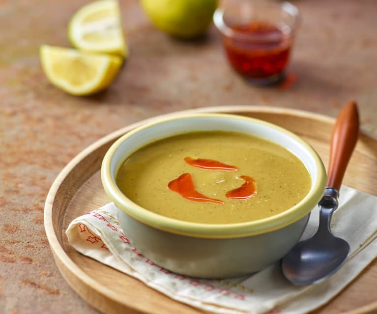

Lentile Soup
Turkish Red Lentil Soup Recipe

Description
Turkish red lentil soup is ready in 30 minutes and is best served with a squeeze of lemon. This gluten free and vegan soup is so simple to make at home.
Turkish cuisine offers so many easy and delicious recipes that don't call for exotic ingredients. You can make recipes such as cacik (Turkish yogurt and cucumber), gozleme (Turkish stuffed flatbread) and Turkish white bean salad with staples in your pantry and fridge. This red lentil soup is another easy Turkish recipe that you can make at home.
INGREDIENTS
- 2 tbsp olive oil
- 1 ½ cup red lentil
- 1 medium size carrot
- 1 tbsp tomato paste
- 1 teaspoon cumin
- 1 teaspoon aleppo pepper
- 1 teaspoon black pepper
- 2 teaspoon salt
INSTRUCTIONS
- Heat olive oil in a pot and sauté onion until golden.
- Add in tomato paste and cook for a minute. Add in chopped carrots and cook for a few minutes.
- Next, add the red lentils and spices. Stir well and add water.
- Bring to simmer and cook covered for about 20 minutes. Uncover and cook for another 10 minutes until the lentils are fully cooked.
- Blend the soup in blender or use an immersion blender.
- Serve with some freshly squeezed lemon juice.
FEED BACK
Send us your comments and your photos when you try this recipe via e-mail